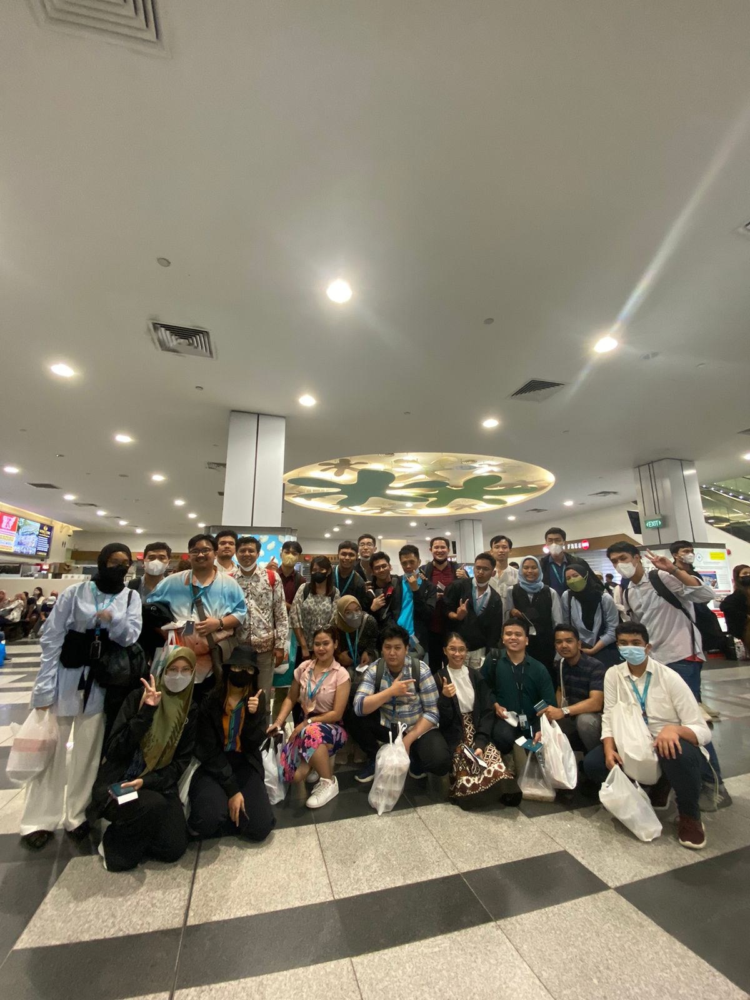
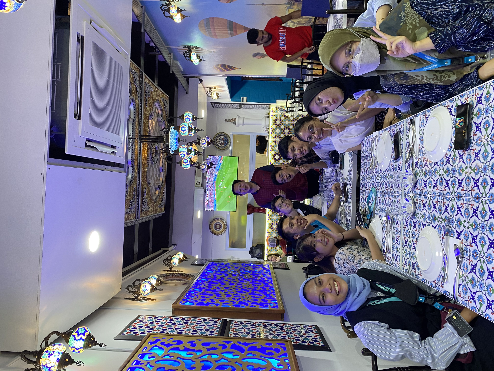

RANDY
STUDENT PURWADHIKA BATAM - JCWD BATCH 1
Personal Information
| Name | Randy |
|---|---|
| Date of birth | 1 Maret 1995 |
| Occupation | Student |
| Major | Mathematics |
STUDENTS
EAT TOGETHER
OFFICE TOUR IN SG

Control & Development Specialist South Jakarta, DKI Jakarta, Indonesia April 2022 – November 2022 1. Controlling marketing costs 2. Create and analyze the use of marketing costs by Branches, Areas, and Dealers 3. Create and Analyze for Program costs
4. Support calculations in developing marketing programs in the system 5. Make a Marketing Profile Report by Branches and Dealers 6. Support marketing program analysis requests 7. Make a Special Marketing Fee Submission on request 8. Controlling and validating the submission of Marketing Fees from branches 9. Create data according to user's request

Data Control & Monitoring South Jakarta, DKI Jakarta, Indonesia September 2018 – Agustus 2019, Juni 2020-Maret 2020 1. Interpret data, analyze results using statistical techniques and provide ongoing reports. 2. Identify, analyze, and interpret trends or patterns in complex data sets. 3. Find and define new process improvement opportunities. 4. Ensures data integrity by monitoring and validating information.
Branch Manager Ngawi, East Java, Indonesia September 2019 - May 2020 1. Supervise, coordinate, and monitor all operational activities; also lead marketing activities. 2. Observe and assess employee performance; also provide solutions to various problems.